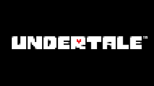

UNDERTALE
Undertale é um RPG eletrônico criado pelo desenvolvedor independente norte-americano Toby Fox.
Nele, o jogador pode controlar uma criança humana que caiu em uma caverna,
uma região grande e isolada sob a superfície da Terra, separada por uma barreira mágica.

SOBRE
Data de lançamento inicial: 15 de setembro de 2015
Plataformas: Nintendo Switch, PlayStation 4, Xbox One, Linux, MAIS
Gêneros: Jogo eletrônico independente, RPG eletrônico, Jogo eletrônico de aventura, Jogo eletrônico de ação